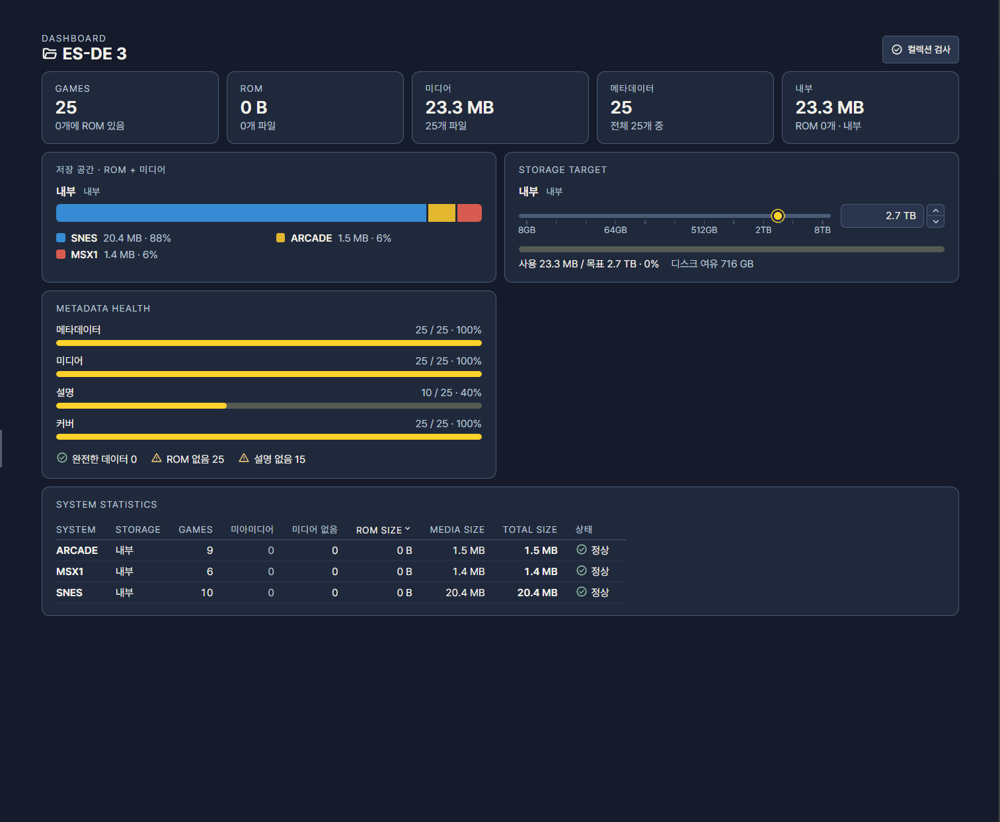

Dashboard
게임목록이 커질수록 어느 시스템에 정보가 비어 있는지, 미디어는 얼마나 갖추어져 있는지, 저장 장치에 얼마나 들어갈지를 항목별로 일일이 확인하기 어려워집니다. 게임이 수천 개에 이르면 목록을 위에서부터 훑어보는 방식으로는 전체 상태를 파악할 수 없습니다. Dashboard는 현재 컬렉션의 게임·메타데이터·미디어가 채워진 정도와 저장 장치 사용량을 한 화면에 모아 보여 줍니다. 목표 용량을 정해 두고 게임목록의 크기를 계획할 때도 사용합니다.
Dashboard는 현황을 읽는 화면입니다. 이 화면에서 메타데이터를 고치거나 파일을 옮기지는 않으며, 부족한 부분을 찾은 뒤 해당 게임목록이나 파일 관리로 돌아가 처리합니다. 정리 작업을 시작하기 전에 어디부터 손대야 할지 정하는 용도, 그리고 정리를 마친 뒤 결과를 점검하는 용도로 쓰기에 알맞습니다.
여는 법
왼쪽 아래 Dashboard 를 누릅니다. 다시 누르거나 시스템을 선택하면 게임목록 화면으로 돌아갑니다. 열려 있는 탭의 컬렉션을 기준으로 내용이 나타나므로, 확인하려는 게임목록의 탭을 먼저 선택한 뒤 엽니다.


- 1자료 집계
- 2시스템별 집계
- 3저장 장치 사용량
- 4목표 용량
화면 구성
| 번호 | 항목 | 보이는 것 | 활용 |
|---|---|---|---|
| ① | 자료 집계 | 게임 수와 메타데이터·미디어가 채워진 현황 | 컬렉션 전체가 얼마나 정리되어 있는지 대략 파악합니다. 정리 작업의 전후를 비교하는 기준으로도 쓸 수 있습니다. |
| ② | 시스템별 집계 | 시스템별 자료 수와 상태 비교 | 어느 시스템이 상대적으로 비어 있는지 찾습니다. 작업 순서를 정할 때 참고합니다. |
| ③ | 저장 장치 사용량 | 내부·외부 저장 장치별 사용량과 남은 공간 | 게임을 어느 장치에 둘 수 있는지 가늠합니다. |
| ④ | 목표 용량 | 저장 장치별로 계획한 자료 용량 | 옮기거나 정리할 때 맞출 기준 용량으로 씁니다. |
Metadata health에는 Metadata·Media·Description·Cover의 보유 현황, 완성·ROM 없음·미디어 없음·설명 없음·커버 없음 상태가 표시됩니다. 시스템 표는 게임 수·고아 미디어·미디어 없음·ROM/미디어/전체 용량을 집계합니다.
활용
- 정보가 빠진 게임 찾기: 집계에서 수치가 낮은 시스템을 확인한 뒤, 해당 시스템의 게임목록으로 돌아가 직접 편집하거나 스크랩으로 채웁니다. 시스템 전체를 훑어보는 용도로 편리하며, 개별 게임을 고르는 일은 게임목록 화면에서 합니다.
- 용량 계획: 저장 장치의 목표 용량을 입력하거나 조절해, 내부 저장 장치와 외부 드라이브에 나눌 게임의 규모를 정합니다. 용량 제약이 있는 SD카드 등으로 옮기기 전에 들어갈 분량을 가늠할 때 유용합니다.
- 정리 대상 확인: 집계에서 ROM이 없는 항목이나 미디어 정리가 필요한 시스템을 찾고, 파일 관리의 정리 기능으로 이어서 처리합니다.
- 작업 전후 점검: 스크랩이나 가져오기로 메타데이터를 대량으로 채운 뒤 Dashboard를 다시 열어, 시스템별 채워진 정도가 의도한 만큼 올랐는지 확인합니다.
참고 사항
- 집계는 현재 탭의 컬렉션 기준입니다. 여러 게임목록을 탭으로 열어 두었다면 탭을 바꿀 때마다 그 컬렉션의 현황이 나타납니다. 탭 사이의 수치를 합산해서 보여 주지는 않습니다.
- 목표 용량은 계획용 값입니다. 실제 디스크의 용량을 바꾸지 않으며 파일을 지우거나 줄이지도 않습니다. 상단 요약 영역의 용량 표시에도 같은 값을 씁니다.
- 파일을 앱 밖에서 바꿨거나 외부 드라이브를 다시 연결했다면 스캔한 뒤 집계를 봅니다. 스캔하기 전의 집계는 이전 상태를 반영하고 있을 수 있습니다.
- 파일 작업이 성공했는지는 집계 숫자가 아니라 작업 결과로 판단합니다. 숫자는 현황을 읽는 용도입니다.
문제 해결
집계와 실제 파일 수가 다릅니다.
정보 항목 수, 미디어 파일 수, 실제 ROM 보유 수는 서로 다른 집계입니다. 예를 들어 게임목록에 항목이 있어도 ROM 파일이 없을 수 있고, 반대로 폴더에 파일이 있어도 게임목록에 등록되지 않았을 수 있습니다. 선택한 컬렉션과 외부 드라이브 연결을 확인하고 다시 스캔합니다.
외부 드라이브의 사용량이 나타나지 않습니다.
드라이브가 연결되어 있고 컬렉션이 그 위치를 가리키는지 확인합니다. 연결을 복구한 뒤에는 스캔해서 현재 상태를 다시 읽습니다.
목표 용량을 입력했는데 실제 용량은 그대로입니다.
목표 용량은 계획용 값이므로 정상입니다. 실제로 용량을 맞추려면 파일 관리에서 정리 작업을 진행합니다.
다른 탭으로 바꿨는데 수치가 달라졌습니다.
집계는 현재 탭의 컬렉션 기준이므로 정상입니다. 확인하려는 게임목록의 탭이 선택되어 있는지 확인합니다.